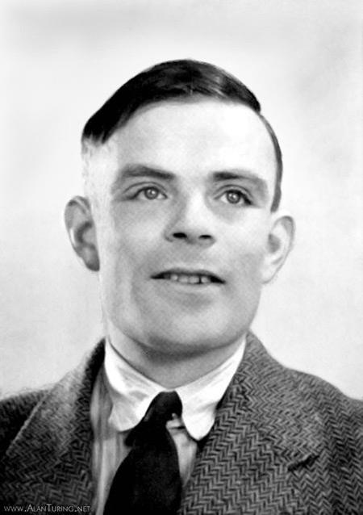

Un matematico tra teoria e costruzione
Alan Mathison Turing nacque a Londra nel 1912. Studiò matematica al King's College di Cambridge e conseguì il dottorato a Princeton sotto la supervisione del logico Alonzo Church.
Il suo lavoro attraversò campi che oggi riconosciamo come informatica teorica, crittografia, progettazione di calcolatori, intelligenza artificiale e modellazione matematica dei fenomeni biologici.
Il filo comune era una domanda: quali attività del pensiero e del calcolo possono essere descritte come regole abbastanza precise da essere eseguite da una macchina?

Una cronologia essenziale
- Studia matematica al King's College di Cambridge, dove si distingue nel campo della logica e della probabilità.
- Pubblica On Computable Numbers: introduce il modello oggi chiamato macchina di Turing e l'idea di macchina universale.
- Studia a Princeton con Alonzo Church e consegue il dottorato in matematica.
- Lavora a Bletchley Park alla crittoanalisi delle comunicazioni tedesche durante la Seconda guerra mondiale.
- Al National Physical Laboratory elabora il progetto ACE, uno dei primi progetti dettagliati di calcolatore elettronico a programma memorizzato.
- Lavora all'Università di Manchester su calcolatori, programmazione e temi che oggi appartengono all'intelligenza artificiale.
- Propone il celebre gioco dell'imitazione e studia con modelli matematici la formazione di strutture negli organismi viventi.
Bletchley Park ed Enigma
Turing lavorò nel centro britannico di crittoanalisi di Bletchley Park. Contribuì ai metodi per decifrare messaggi protetti dalla macchina Enigma e alla progettazione della Bombe britannica, sviluppata insieme ad altri studiosi e tecnici.
Il lavoro richiedeva matematica, conoscenza delle procedure operative avversarie, progettazione elettromeccanica e gestione di grandi quantità di messaggi.
Due macchine diverse
Macchina di Turing: modello matematico generale, usato per studiare ciò che è calcolabile.
Bombe: dispositivo elettromeccanico specializzato, costruito per aiutare a individuare le configurazioni giornaliere di Enigma.
Condividono il nome di Turing, ma hanno scopi e natura completamente differenti.
Dalla teoria ai computer reali
Universalità
Una macchina generale può simulare procedure differenti leggendo descrizioni codificate.
ACE
Turing tradusse molte idee teoriche in un progetto concreto di computer elettronico programmabile.
Programmazione
Studiò organizzazione delle istruzioni, memoria, sottoprogrammi e modi efficienti di usare le macchine.
Una figura scientifica più ampia
- Intelligenza artificiale: nel 1950 trasformò la domanda “le macchine possono pensare?” in una prova basata sul comportamento durante una conversazione.
- Biologia matematica: studiò come reazioni e diffusione possano produrre motivi ordinati, come macchie e strisce.
- Sport: fu un ottimo corridore di lunga distanza e raggiunse tempi di rilievo nella maratona.
Morì nel 1954. Il valore del suo contributo scientifico e bellico fu riconosciuto pienamente dal grande pubblico solo molti anni più tardi.